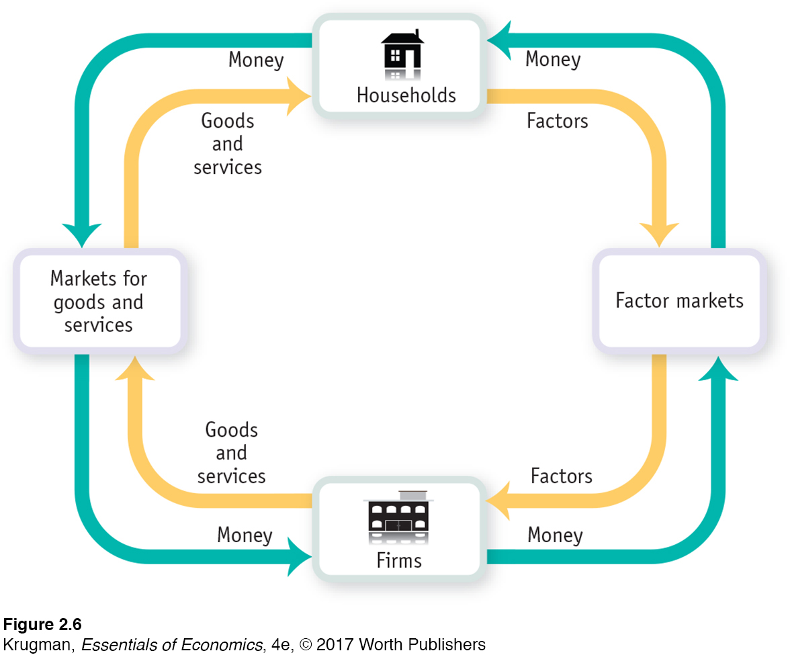

Figure 2.6: FIGURE 2-6 The Circular-Flow Diagram

Figure 2.6: This diagram represents the flows of money and of goods and services in the economy. In the markets for goods and services, households purchase goods and services from firms, generating a flow of money to the firms and a flow of goods and services to the households. The money flows back to households as firms purchase factors of production from the households in factor markets.